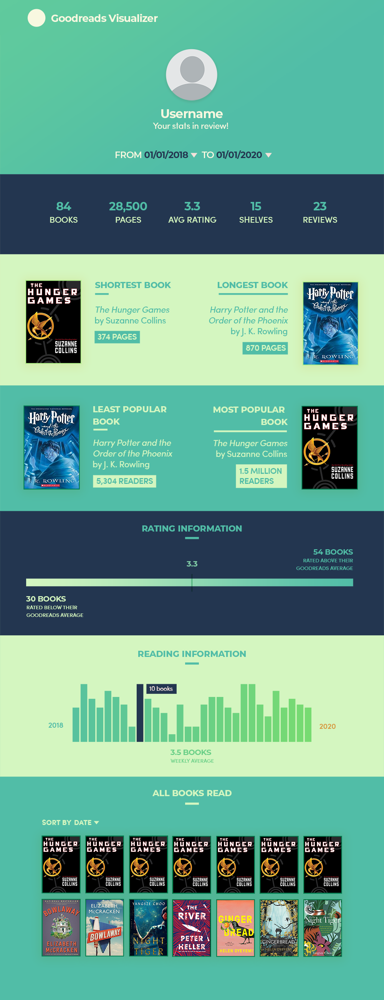

Goodreads Visualizer
Spring 2020 • CS 411 (Database Systems)
#School #HTML #CSS #React #Neo4j #Prototyping
Description
Goodreads is a social cataloguing website that allows users to review, rate, share, and save all the books they are reading, currently reading, or plan to read. The Goodreads Visualizer takes a user’s ID number and displays personalized statistics based on the user’s reading history; my team and I conceptualized this project during a database course to expand on the limited datavis options currently offered by the official Goodreads site. These statistics include basic summary data, visualizations of reading patterns, interactive graphs, and a personally-tailored recommendations section.
Responsibilities
▶ Conceptualized and designed website wireframes
▶ Made high-quality UI mockups in Photoshop
▶ Implemented a majority of the front-end code
— Watch Demo
Initial wireframe design
Final mockup design

Final intro screen